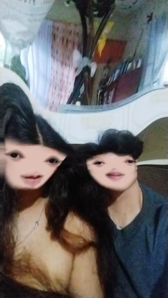
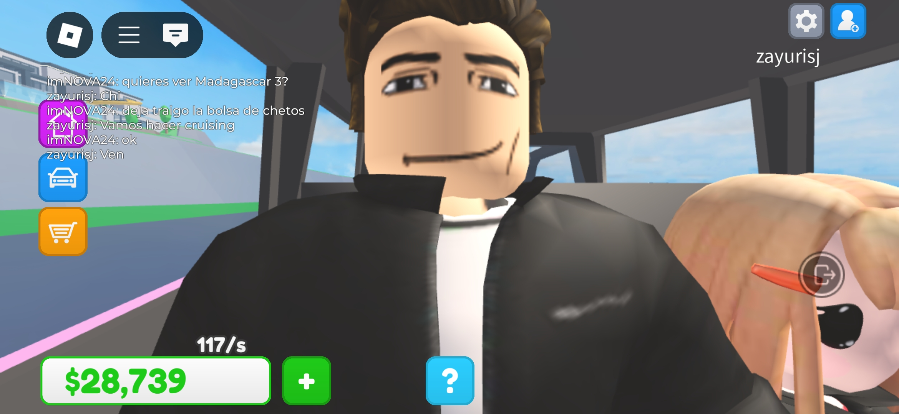
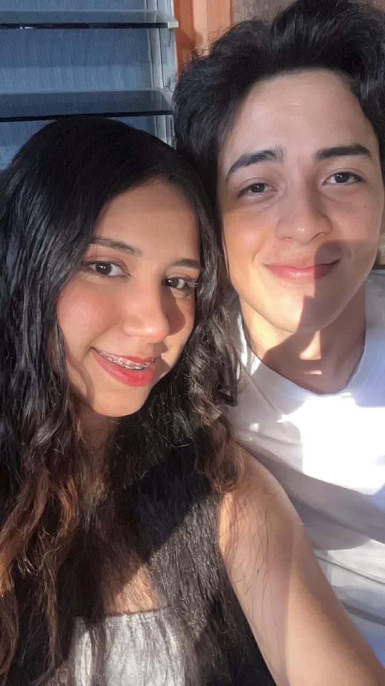
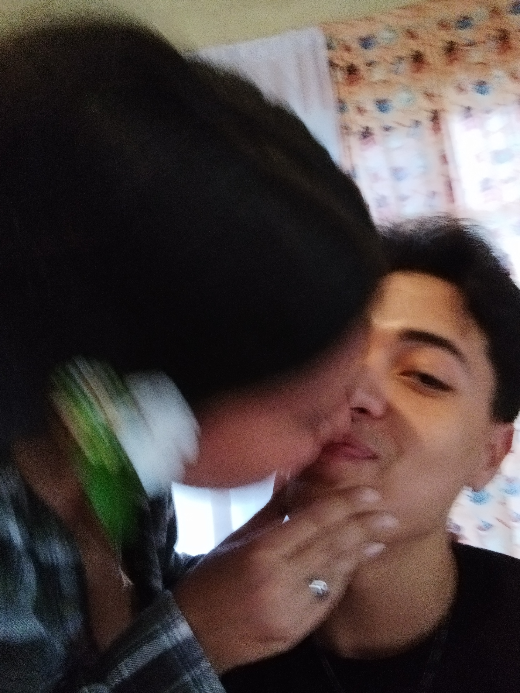
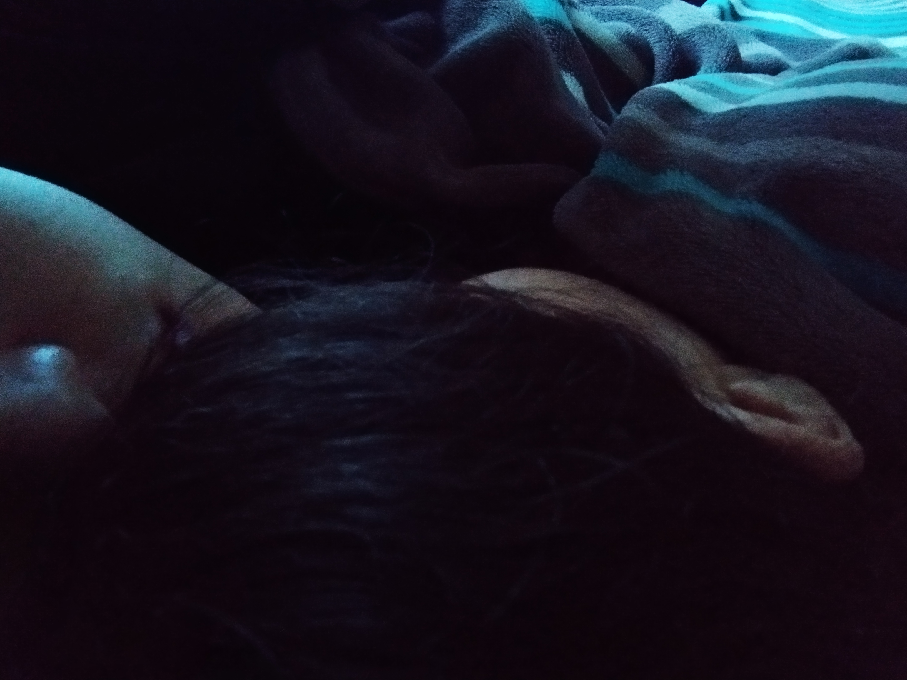
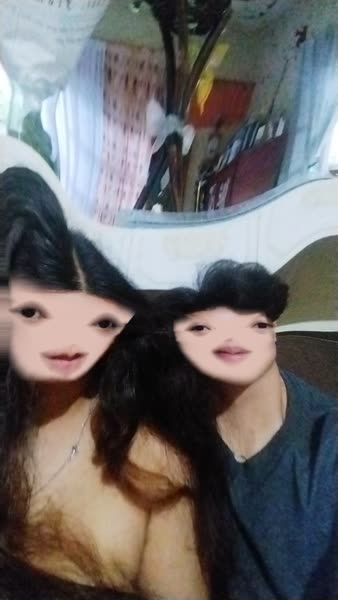
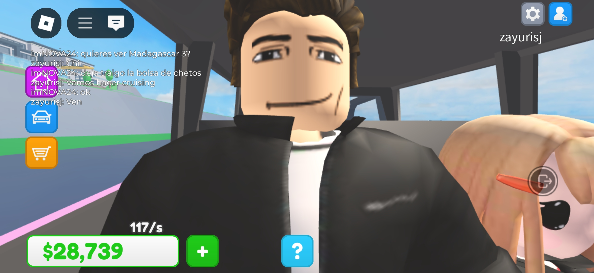
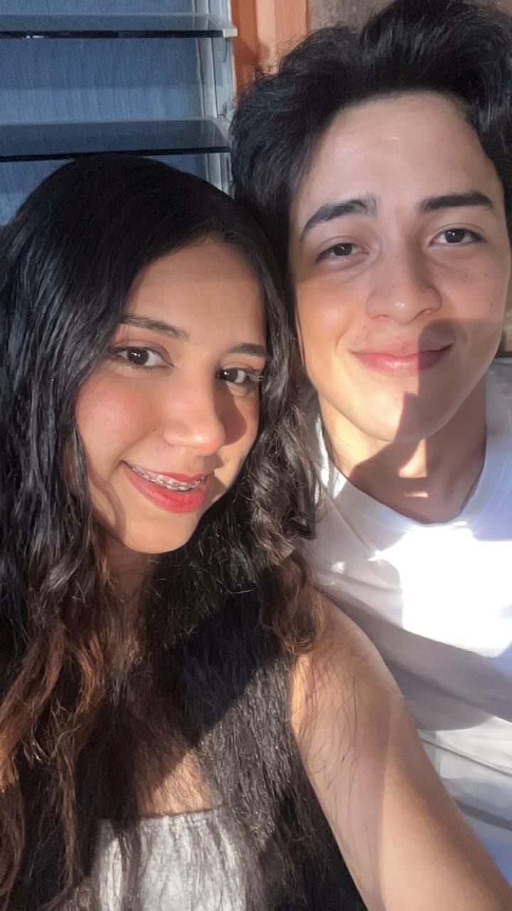
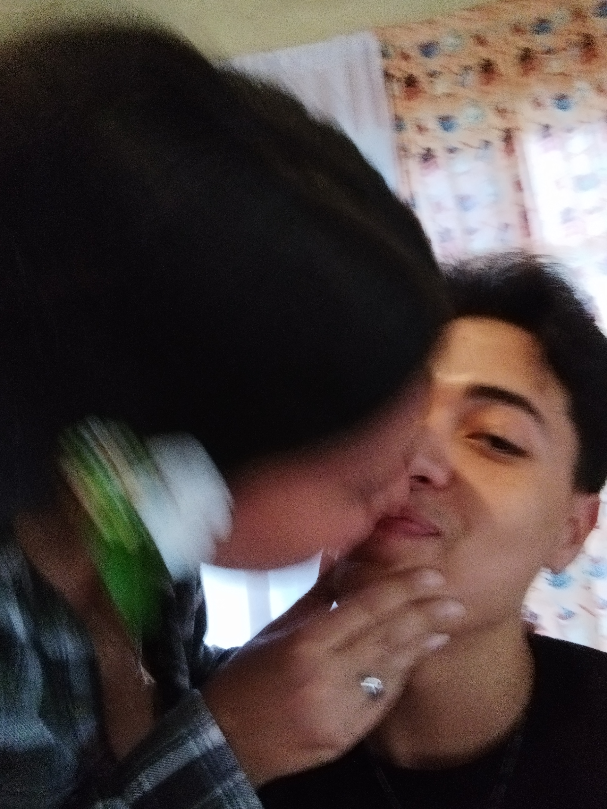
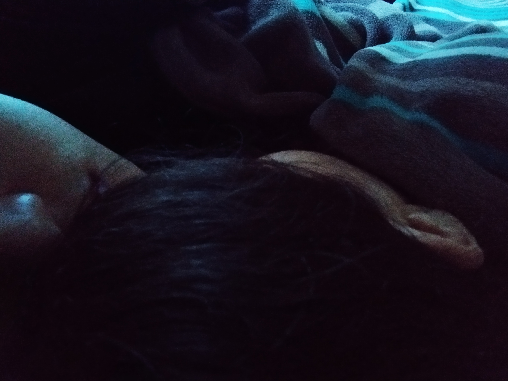

¡Han sido
0
días increíbles juntos!
Hoy celebramos un año lleno de risas, aprendizajes, juegos, abrazos, momentos únicos, momentos dulces y muchos recuerdos que atesoro, primeramente dios nos permitirá crear más recuerdos juntos. Te volviste mi persona favorita, gracias por estar conmigo en lo bueno y en lo malo, por aguantarme cuando te ando molestando haciendote cosquillas en los pies y además gracias por hacer que cada día a tu lado valga la pena.
Doy gracias a dios por haberte puesto en mi camino y sobretodo gracias a ti por el simple hecho de ser tú, por ti siempre quiero dar lo mejor de mí.
Feliz primer aniversario ¡TE AMO!
Algunas de las muchas canciones que me hacen pensar en ti
Algunos de Nuestros Momentos (hay que tomarnos más fotos)

 








